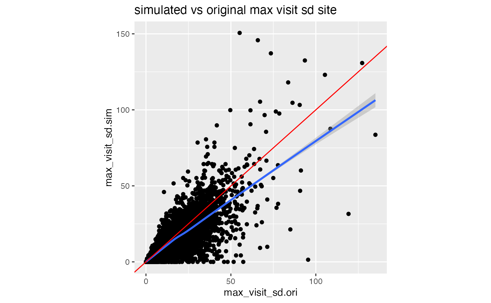
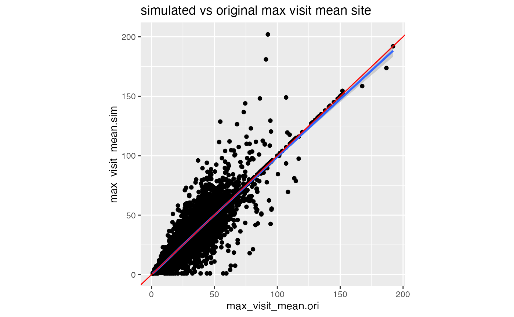

Load
suppressPackageStartupMessages(library(tidyverse))
suppressPackageStartupMessages(library(knitr))
suppressPackageStartupMessages(library(furrr))
suppressPackageStartupMessages(library(future))
suppressPackageStartupMessages(library(simaerep))
# RAM ~26 GB
# plan 2GB per core
plan(multisession, workers = 13)Introduction
We want to define minimal requirements for simulating test data that reflects realistic portfolio data which we then want to use to benchmark overall {simaerep} performance.
Performance
These simulations take some time to run and require multiple cores and appropriate memory. Rendering articles in {pkgdown} can be a bit unstable so we recommend to render first using pure {rmarkdown} to generate the intermediate csv files.
rmarkdown::render("vignettes/_portfolio_perf.Rmd", knit_root_dir = "/home/koneswab/simaerep")Portfolio Configuration
The portfolio configuration should give a minimal description of a portfolio without violating data privacy laws or competitive intellectual property. We propose to include the following metrics into the portfolio configuration:
site parameters:
- mean of all maximum patient visits
- sd of of all maximum patient visits
- total number patients
study parameters:
- mean AE per visit
The information contained in a portfolio configuration is very scarce and thus can be shared more easily within the industry. We can use those parameters to simulate test data for assessing {simaerep} performance on a given portfolio.
We can start with a maximum aggregation of visit and n_ae on patient level starting with df_visit as we would use it for simaerep::site_aggr(). We can use simaerep::get_config to generate a valid portfolio configuration, which will automatically apply a few filters:
- remove patients with 0 visits
- minimum number of patients per study
- minimum number of sites per study
- anonymize study and site IDs
df_visit1 <- sim_test_data_study(n_pat = 100, n_sites = 10,
frac_site_with_ur = 0.4, ur_rate = 0.6)
df_visit1$study_id <- "A"
df_visit2 <- sim_test_data_study(n_pat = 100, n_sites = 10,
frac_site_with_ur = 0.2, ur_rate = 0.1)
df_visit2$study_id <- "B"
df_visit <- bind_rows(df_visit1, df_visit2)
df_site_max <- df_visit %>%
group_by(study_id, site_number, patnum) %>%
summarise(max_visit = max(visit),
max_ae = max(n_ae),
.groups = "drop")
df_config <- simaerep::get_config(
df_site_max, anonymize = TRUE,
min_pat_per_study = 100,
min_sites_per_study = 10
)
df_config## # A tibble: 20 x 6
## study_id ae_per_visit_mean site_number max_visit_sd max_visit_mean n_pat
## <chr> <dbl> <chr> <dbl> <dbl> <int>
## 1 0001 0.382 0001 4.34 21.2 10
## 2 0001 0.382 0002 3.94 21.2 10
## 3 0001 0.382 0003 5.23 17.5 10
## 4 0001 0.382 0004 3.37 18.5 10
## 5 0001 0.382 0005 4.08 18.3 10
## 6 0001 0.382 0006 4.76 18.3 10
## 7 0001 0.382 0007 4.03 18.4 10
## 8 0001 0.382 0008 4.24 21.2 10
## 9 0001 0.382 0009 3.02 19 10
## 10 0001 0.382 0010 2.49 20.2 10
## 11 0002 0.505 0001 3.77 19.2 10
## 12 0002 0.505 0002 4.37 18.3 10
## 13 0002 0.505 0003 2.22 19.6 10
## 14 0002 0.505 0004 4.79 18.7 10
## 15 0002 0.505 0005 2.79 17.7 10
## 16 0002 0.505 0006 3.86 22.3 10
## 17 0002 0.505 0007 4.42 18.7 10
## 18 0002 0.505 0008 5.03 21.2 10
## 19 0002 0.505 0009 4.24 19.8 10
## 20 0002 0.505 0010 4.01 22.1 10Simulate Portfolio from Configuration
We can now apply sim_test_data_portfolio which uses sim_test_data_study() to generate artificial data on visit level.
df_portf <- sim_test_data_portfolio(df_config)
df_portf## # A tibble: 3,804 x 8
## study_id ae_per_visit_me… site_number max_visit_sd max_visit_mean patnum
## <chr> <dbl> <chr> <dbl> <dbl> <chr>
## 1 0001 0.382 0001 4.34 21.2 0001
## 2 0001 0.382 0001 4.34 21.2 0001
## 3 0001 0.382 0001 4.34 21.2 0001
## 4 0001 0.382 0001 4.34 21.2 0001
## 5 0001 0.382 0001 4.34 21.2 0001
## 6 0001 0.382 0001 4.34 21.2 0001
## 7 0001 0.382 0001 4.34 21.2 0001
## 8 0001 0.382 0001 4.34 21.2 0001
## 9 0001 0.382 0001 4.34 21.2 0001
## 10 0001 0.382 0001 4.34 21.2 0001
## # … with 3,794 more rows, and 2 more variables: visit <int>, n_ae <int>Load Realistic Configuration
Here we load a realistic portfolio configuration.
df_config <- readr::read_csv("ae_profile.csv")##
## ── Column specification ────────────────────────────────────────────────────────
## cols(
## study_id = col_character(),
## ae_per_visit_mean = col_double(),
## ae_per_day_mean = col_double(),
## site_number = col_character(),
## max_visit_sd = col_double(),
## max_visit_mean = col_double(),
## max_days_sd = col_double(),
## max_days_mean = col_double(),
## n_pat = col_double()
## )
df_config## # A tibble: 15,674 x 9
## study_id ae_per_visit_me… ae_per_day_mean site_number max_visit_sd
## <chr> <dbl> <dbl> <chr> <dbl>
## 1 0001 0.269 0.00725 0001 0.707
## 2 0001 0.269 0.00725 0002 2.12
## 3 0001 0.269 0.00725 0003 0.577
## 4 0001 0.269 0.00725 0004 8.87
## 5 0001 0.269 0.00725 0005 0
## 6 0001 0.269 0.00725 0006 0
## 7 0001 0.269 0.00725 0007 0
## 8 0001 0.269 0.00725 0008 5.34
## 9 0001 0.269 0.00725 0009 0
## 10 0001 0.269 0.00725 0010 1.82
## # … with 15,664 more rows, and 4 more variables: max_visit_mean <dbl>,
## # max_days_sd <dbl>, max_days_mean <dbl>, n_pat <dbl>Simulate Portfolio
And again simulate artificial visit level data. Using parallel processing.
df_portf <- sim_test_data_portfolio(df_config, parallel = TRUE, progress = TRUE)
df_portf## # A tibble: 1,996,906 x 11
## study_id ae_per_visit_me… ae_per_day_mean site_number max_visit_sd
## <chr> <dbl> <dbl> <chr> <dbl>
## 1 0001 0.269 0.00725 0001 0.707
## 2 0001 0.269 0.00725 0001 0.707
## 3 0001 0.269 0.00725 0001 0.707
## 4 0001 0.269 0.00725 0001 0.707
## 5 0001 0.269 0.00725 0001 0.707
## 6 0001 0.269 0.00725 0001 0.707
## 7 0001 0.269 0.00725 0001 0.707
## 8 0001 0.269 0.00725 0001 0.707
## 9 0001 0.269 0.00725 0001 0.707
## 10 0001 0.269 0.00725 0001 0.707
## # … with 1,996,896 more rows, and 6 more variables: max_visit_mean <dbl>,
## # max_days_sd <dbl>, max_days_mean <dbl>, patnum <chr>, visit <int>,
## # n_ae <int>Confirm that Portfolio Simulation results in Similar Configuration
df_site_max_portf <- df_portf %>%
group_by(study_id, site_number, patnum) %>%
summarise(max_visit = max(visit),
max_ae = max(n_ae),
.groups = "drop")
df_config_portf <- simaerep::get_config(df_site_max_portf, anonymize = TRUE, min_pat_per_study = 100, min_sites_per_study = 10)
df_comp <- df_config %>%
left_join(
df_config_portf,
by = c("study_id", "site_number"),
suffix = c(".ori", ".sim")
) %>%
select(
study_id,
starts_with("ae"),
site_number,
contains("max_visit_sd"),
contains("max_visit_mean"),
contains("n_pat")
)
df_comp %>%
select(study_id, starts_with("ae")) %>%
distinct() %>%
ggplot(aes(ae_per_visit_mean.ori, ae_per_visit_mean.sim)) +
geom_point() +
geom_smooth() +
labs(title = "simulated vs original AE per visit study mean") +
theme(aspect.ratio = 1)## `geom_smooth()` using method = 'loess' and formula 'y ~ x'
df_comp %>%
ggplot(aes(max_visit_sd.ori, max_visit_sd.sim)) +
geom_point() +
geom_smooth() +
geom_abline(slope = 1, color = "red") +
labs(title = "simulated vs original max visit sd site") +
theme(aspect.ratio = 1)## `geom_smooth()` using method = 'gam' and formula 'y ~ s(x, bs = "cs")'
In our portfolio simulation we sample the patient maximum visit values from a normal distribution. If that returns values smaller than 1 we replace it with one. The larger the SD values compared to the mean values the more likely we will sample a patient maximum visit smaller than one. Every time we have to do that correction we are lowering the patient maximum visit SD in our simulation, which we can see in the graph above.
df_comp %>%
ggplot(aes(max_visit_mean.ori, max_visit_mean.sim)) +
geom_point() +
geom_smooth() +
geom_abline(slope = 1, color = "red") +
labs(title = "simulated vs original max visit mean site") +
theme(aspect.ratio = 1)## `geom_smooth()` using method = 'gam' and formula 'y ~ s(x, bs = "cs")'
df_comp %>%
ggplot(aes(n_pat.ori, n_pat.sim)) +
geom_point() +
geom_smooth() +
labs(title = "simulated vs original n_pat site") +
theme(aspect.ratio = 1)## `geom_smooth()` using method = 'gam' and formula 'y ~ s(x, bs = "cs")'Get Under-Reporting Probability for Different Under Reporting Scenarios
The performance of detecting AE under-reporting is dependent on three things:
- the higher the mean AE per visit on study level the better
- the higher the number of patients at an under-reporting site the better
- the higher the number of under-reporting sites in a study the worse
In our initial usability assessment we have fixed those parameters. Here we are going leave them as they are in the portfolio. The vanilla version of our artificial portfolio data does not contain any under-reporting sites yet. However simaerep::sim_ur_scenarios() will apply under-reporting scenarios to each site. Reducing the number of AEs by a given under-reporting rate (ur_rate) for all patients at the site and add the corresponding under-reporting statistics. Since the under-reporting probability is also affected by the number of other sites that are under-reporting we additionally calculate under-reporting statistics in a scenario where additional under reporting sites are present. For this we use the mean number of patients per site at the study to calculate the final number of patients for which we lower the AEs in a given under-reporting scenario.
df_scen <- sim_ur_scenarios(df_portf,
extra_ur_sites = 5,
ur_rate = c(0.1, 0.25, 0.5, 0.75, 1),
parallel = TRUE,
poisson = TRUE,
prob_lower = TRUE,
progress = TRUE)
df_scen
readr::write_csv(df_scen, file = "scen.csv")Portfolio Performance
We can calculate the portfolio performance as the overall true positive rate (tpr as tp/P) on the basis of desired false positive rates (fpr as fp/N). We calculate a threshold based on the desired fpr using the vanilla scenario with no under-reporting sites. Then we check how many sites with known under-reporting get flagged to calculate tpr.
df_scen <- readr::read_csv("scen.csv")##
## ── Column specification ────────────────────────────────────────────────────────
## cols(
## study_id = col_character(),
## site_number = col_character(),
## n_pat = col_double(),
## n_pat_with_med75 = col_double(),
## visit_med75 = col_double(),
## mean_ae_site_med75 = col_double(),
## mean_ae_study_med75 = col_double(),
## n_pat_with_med75_study = col_double(),
## extra_ur_sites = col_double(),
## frac_pat_with_ur = col_double(),
## ur_rate = col_double(),
## prob_low = col_double(),
## prob_low_adj = col_double(),
## prob_low_prob_ur = col_double()
## )
df_perf <- get_portf_perf(df_scen)
df_perf %>%
pivot_wider(
names_from = extra_ur_sites,
values_from = tpr,
names_prefix = "extra_ur_sites_"
) %>%
knitr::kable(digits = 3)| fpr | thresh | ur_rate | extra_ur_sites_0 | extra_ur_sites_1 | extra_ur_sites_2 | extra_ur_sites_3 | extra_ur_sites_4 | extra_ur_sites_5 |
|---|---|---|---|---|---|---|---|---|
| 0.001 | 0.995 | 0.00 | 0.001 | 0.001 | 0.001 | 0.001 | 0.001 | 0.001 |
| 0.001 | 0.995 | 0.10 | 0.007 | 0.006 | 0.006 | 0.006 | 0.006 | 0.006 |
| 0.001 | 0.995 | 0.25 | 0.070 | 0.066 | 0.062 | 0.058 | 0.055 | 0.053 |
| 0.001 | 0.995 | 0.50 | 0.298 | 0.279 | 0.263 | 0.249 | 0.237 | 0.227 |
| 0.001 | 0.995 | 0.75 | 0.505 | 0.467 | 0.439 | 0.424 | 0.407 | 0.385 |
| 0.001 | 0.995 | 1.00 | 0.611 | 0.531 | 0.493 | 0.479 | 0.460 | 0.432 |
| 0.010 | 0.954 | 0.00 | 0.010 | 0.010 | 0.010 | 0.010 | 0.010 | 0.010 |
| 0.010 | 0.954 | 0.10 | 0.056 | 0.054 | 0.053 | 0.052 | 0.051 | 0.049 |
| 0.010 | 0.954 | 0.25 | 0.207 | 0.200 | 0.194 | 0.187 | 0.181 | 0.175 |
| 0.010 | 0.954 | 0.50 | 0.483 | 0.467 | 0.453 | 0.439 | 0.427 | 0.416 |
| 0.010 | 0.954 | 0.75 | 0.680 | 0.656 | 0.633 | 0.610 | 0.590 | 0.574 |
| 0.010 | 0.954 | 1.00 | 0.762 | 0.705 | 0.660 | 0.620 | 0.591 | 0.574 |
| 0.050 | 0.864 | 0.00 | 0.050 | 0.050 | 0.050 | 0.050 | 0.050 | 0.050 |
| 0.050 | 0.864 | 0.10 | 0.161 | 0.159 | 0.157 | 0.154 | 0.152 | 0.150 |
| 0.050 | 0.864 | 0.25 | 0.369 | 0.362 | 0.355 | 0.348 | 0.340 | 0.334 |
| 0.050 | 0.864 | 0.50 | 0.632 | 0.623 | 0.615 | 0.605 | 0.594 | 0.582 |
| 0.050 | 0.864 | 0.75 | 0.784 | 0.775 | 0.764 | 0.754 | 0.742 | 0.727 |
| 0.050 | 0.864 | 1.00 | 0.830 | 0.810 | 0.791 | 0.774 | 0.757 | 0.733 |
Benchmark simaerep Using Portfolio Performance
Effect of Adjusting visit_med75
One of the latest update to simaerep was an improvement to the visit_med75 calculation. We can check how this has affected portfolio performance. We find that we have most likely slightly increased performance.
df_scen_old_visit_med75 <- sim_ur_scenarios(df_portf,
extra_ur_sites = 5,
ur_rate = c(0.1, 0.25, 0.5, 0.75, 1),
parallel = TRUE,
poisson = TRUE,
prob_lower = TRUE,
progress = TRUE,
site_aggr_args = list(method = "med75")) # default is "med75_adj"
readr::write_csv(df_scen_old_visit_med75, file = "scen_old.csv")
df_scen_old_visit_med75 <- readr::read_csv("scen_old.csv")##
## ── Column specification ────────────────────────────────────────────────────────
## cols(
## study_id = col_character(),
## site_number = col_character(),
## n_pat = col_double(),
## n_pat_with_med75 = col_double(),
## visit_med75 = col_double(),
## mean_ae_site_med75 = col_double(),
## mean_ae_study_med75 = col_double(),
## n_pat_with_med75_study = col_double(),
## extra_ur_sites = col_double(),
## frac_pat_with_ur = col_double(),
## ur_rate = col_double(),
## pval = col_double(),
## prob_low = col_double(),
## pval_adj = col_double(),
## pval_prob_ur = col_double(),
## prob_low_adj = col_double(),
## prob_low_prob_ur = col_double()
## )
df_perf_old <- get_portf_perf(df_scen_old_visit_med75)
df_perf_old %>%
pivot_wider(
names_from = extra_ur_sites,
values_from = tpr,
names_prefix = "extra_ur_sites_"
) %>%
knitr::kable(digits = 3)| fpr | thresh | ur_rate | extra_ur_sites_0 | extra_ur_sites_1 | extra_ur_sites_2 | extra_ur_sites_3 | extra_ur_sites_4 | extra_ur_sites_5 |
|---|---|---|---|---|---|---|---|---|
| 0.001 | 0.995 | 0.00 | 0.001 | 0.001 | 0.001 | 0.001 | 0.001 | 0.001 |
| 0.001 | 0.995 | 0.10 | 0.006 | 0.006 | 0.006 | 0.005 | 0.005 | 0.005 |
| 0.001 | 0.995 | 0.25 | 0.059 | 0.056 | 0.053 | 0.051 | 0.048 | 0.046 |
| 0.001 | 0.995 | 0.50 | 0.264 | 0.250 | 0.238 | 0.227 | 0.216 | 0.205 |
| 0.001 | 0.995 | 0.75 | 0.473 | 0.440 | 0.423 | 0.407 | 0.391 | 0.375 |
| 0.001 | 0.995 | 1.00 | 0.588 | 0.515 | 0.491 | 0.477 | 0.459 | 0.433 |
| 0.010 | 0.954 | 0.00 | 0.010 | 0.010 | 0.010 | 0.010 | 0.010 | 0.010 |
| 0.010 | 0.954 | 0.10 | 0.048 | 0.047 | 0.046 | 0.045 | 0.044 | 0.044 |
| 0.010 | 0.954 | 0.25 | 0.178 | 0.173 | 0.166 | 0.159 | 0.154 | 0.149 |
| 0.010 | 0.954 | 0.50 | 0.433 | 0.421 | 0.409 | 0.398 | 0.387 | 0.375 |
| 0.010 | 0.954 | 0.75 | 0.635 | 0.615 | 0.598 | 0.580 | 0.565 | 0.549 |
| 0.010 | 0.954 | 1.00 | 0.722 | 0.676 | 0.645 | 0.606 | 0.586 | 0.569 |
| 0.050 | 0.855 | 0.00 | 0.050 | 0.050 | 0.050 | 0.050 | 0.050 | 0.050 |
| 0.050 | 0.855 | 0.10 | 0.153 | 0.151 | 0.148 | 0.146 | 0.144 | 0.142 |
| 0.050 | 0.855 | 0.25 | 0.339 | 0.332 | 0.327 | 0.321 | 0.315 | 0.309 |
| 0.050 | 0.855 | 0.50 | 0.589 | 0.581 | 0.573 | 0.565 | 0.556 | 0.547 |
| 0.050 | 0.855 | 0.75 | 0.753 | 0.745 | 0.737 | 0.726 | 0.716 | 0.706 |
| 0.050 | 0.855 | 1.00 | 0.804 | 0.789 | 0.773 | 0.757 | 0.740 | 0.722 |
Days vs. Visits
The maximum number of days per patient can be up to several years, so > 1000 days. simaerep exposes implicitly missing entries which can lead to single patients having 1000 entries or more, one entry for each day on the study. In order to avoid to generate a huge portfolio data frame we preserve memory by wrapping sim_test_data_portfolio() and sim_ur_scenarios() into a single call and apply it per study.
wr <- function(df) {
df_portf <- sim_test_data_portfolio(df, parallel = FALSE, progress = FALSE)
df_scen <- sim_ur_scenarios(df_portf,
extra_ur_sites = 5,
ur_rate = c(0.1, 0.25, 0.5, 0.75, 1),
parallel = FALSE,
poisson = TRUE,
prob_lower = TRUE,
progress = FALSE)
return(df_scen)
}
df_prep <- df_config %>%
select(- max_visit_sd, - max_visit_mean, - ae_per_visit_mean) %>%
rename(max_visit_sd = max_days_sd,
max_visit_mean = max_days_mean,
ae_per_visit_mean = ae_per_day_mean) %>%
group_by(study_id_gr = study_id) %>%
nest() %>%
ungroup()
progressr::with_progress(
df_scen_days <- df_prep %>%
mutate(data = purrr_bar(
.data$data,
.purrr = furrr::future_map,
.f = wr,
.progress = TRUE,
.steps = nrow(.),
.purrr_args = list(.options = furrr_options(seed = TRUE))
)
)
)
df_scen_days <- df_scen_days %>%
unnest(data) %>%
select(- study_id_gr)
readr::write_csv(df_scen_days, file = "scen_days.csv")
df_scen_days <- readr::read_csv("scen_days.csv")##
## ── Column specification ────────────────────────────────────────────────────────
## cols(
## study_id = col_character(),
## site_number = col_character(),
## n_pat = col_double(),
## n_pat_with_med75 = col_double(),
## visit_med75 = col_double(),
## mean_ae_site_med75 = col_double(),
## mean_ae_study_med75 = col_double(),
## n_pat_with_med75_study = col_double(),
## extra_ur_sites = col_double(),
## frac_pat_with_ur = col_double(),
## ur_rate = col_double(),
## pval = col_double(),
## prob_low = col_double(),
## pval_adj = col_double(),
## pval_prob_ur = col_double(),
## prob_low_adj = col_double(),
## prob_low_prob_ur = col_double()
## )
df_perf_days <- get_portf_perf(df_scen_days)
df_perf_days %>%
pivot_wider(
names_from = extra_ur_sites,
values_from = tpr,
names_prefix = "extra_ur_sites_"
) %>%
knitr::kable(digits = 3)| fpr | thresh | ur_rate | extra_ur_sites_0 | extra_ur_sites_1 | extra_ur_sites_2 | extra_ur_sites_3 | extra_ur_sites_4 | extra_ur_sites_5 |
|---|---|---|---|---|---|---|---|---|
| 0.001 | 0.995 | 0.00 | 0.001 | 0.001 | 0.001 | 0.001 | 0.001 | 0.001 |
| 0.001 | 0.995 | 0.10 | 0.013 | 0.012 | 0.011 | 0.011 | 0.010 | 0.009 |
| 0.001 | 0.995 | 0.25 | 0.115 | 0.107 | 0.100 | 0.093 | 0.087 | 0.082 |
| 0.001 | 0.995 | 0.50 | 0.341 | 0.310 | 0.288 | 0.273 | 0.258 | 0.245 |
| 0.001 | 0.995 | 0.75 | 0.496 | 0.443 | 0.408 | 0.390 | 0.371 | 0.351 |
| 0.001 | 0.995 | 1.00 | 0.568 | 0.469 | 0.429 | 0.414 | 0.396 | 0.372 |
| 0.010 | 0.957 | 0.00 | 0.010 | 0.010 | 0.010 | 0.010 | 0.010 | 0.010 |
| 0.010 | 0.957 | 0.10 | 0.064 | 0.062 | 0.059 | 0.057 | 0.055 | 0.053 |
| 0.010 | 0.957 | 0.25 | 0.243 | 0.233 | 0.224 | 0.215 | 0.207 | 0.198 |
| 0.010 | 0.957 | 0.50 | 0.492 | 0.472 | 0.453 | 0.435 | 0.417 | 0.402 |
| 0.010 | 0.957 | 0.75 | 0.648 | 0.613 | 0.585 | 0.559 | 0.534 | 0.517 |
| 0.010 | 0.957 | 1.00 | 0.707 | 0.638 | 0.581 | 0.542 | 0.517 | 0.498 |
| 0.050 | 0.857 | 0.00 | 0.050 | 0.050 | 0.050 | 0.050 | 0.050 | 0.050 |
| 0.050 | 0.857 | 0.10 | 0.181 | 0.178 | 0.175 | 0.171 | 0.169 | 0.165 |
| 0.050 | 0.857 | 0.25 | 0.405 | 0.396 | 0.387 | 0.380 | 0.372 | 0.361 |
| 0.050 | 0.857 | 0.50 | 0.628 | 0.617 | 0.605 | 0.594 | 0.582 | 0.569 |
| 0.050 | 0.857 | 0.75 | 0.748 | 0.737 | 0.724 | 0.714 | 0.701 | 0.685 |
| 0.050 | 0.857 | 1.00 | 0.783 | 0.759 | 0.737 | 0.718 | 0.695 | 0.669 |
Plot
df_perf %>%
mutate(type = "med75_adj") %>%
bind_rows(
df_perf_old %>%
mutate(type = "med75")
) %>%
bind_rows(
df_perf_days %>%
mutate(type = "days")
) %>%
ggplot(aes(x = fpr, y = tpr, color = type)) +
geom_line() +
geom_point() +
facet_grid(ur_rate ~ extra_ur_sites) +
theme(legend.position = "bottom")
Using days instead of visits does not provide a clear advantage while the adjusted method for determining the evaluation point visit_med75 seems to be advantageous.
plan(sequential)